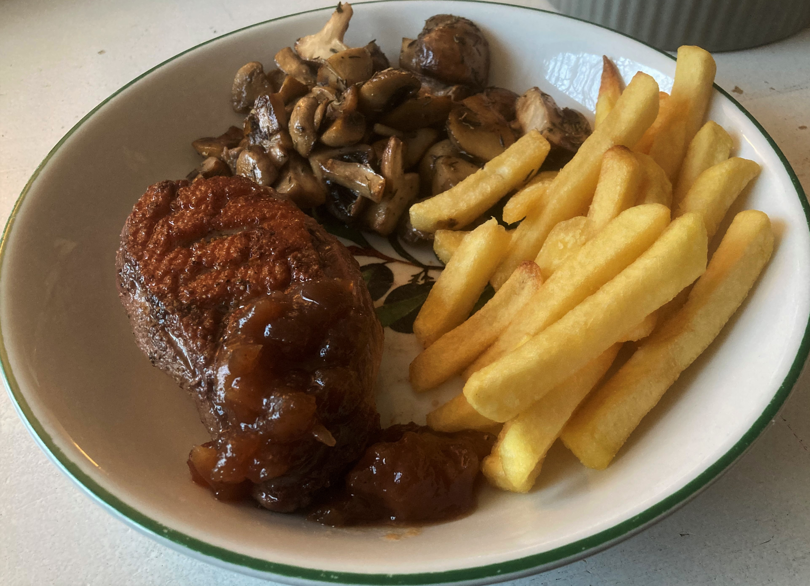

Filet de cannette
Ingrediënten
- 2 tamme eendenborstfilets
- zeezout
- zwarte peper
- rode wijn
Bereiding
- snijd op de velkant een ruitpatroon in het vet van de eendenborstfilet
- zet een voorverwarmde koekenpan op een hoog vuur en laat deze goed heet worden
- leg de filets op de velkant in de pan en
- bak ze zó stevig aan dat je het vet uit de filets ziet lopen
- draai na één minuut het vuur op de halve stand en
- bak de filets nog drie minuten door
- draai de filets om en laat de andere kant zo’n vier minuten bakken
- draai de filets terug naar de velkant en braad deze kant nog eens drie minuten
- peper en zout de filets om en om
- wikkel ze daarna in aluminiumfolie en
- laat de filets zo vijf minuten rusten
- blus het braadvocht eventueel nog af met rode wijn
Download